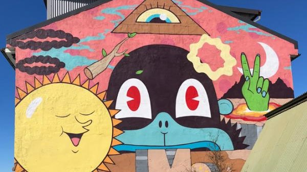
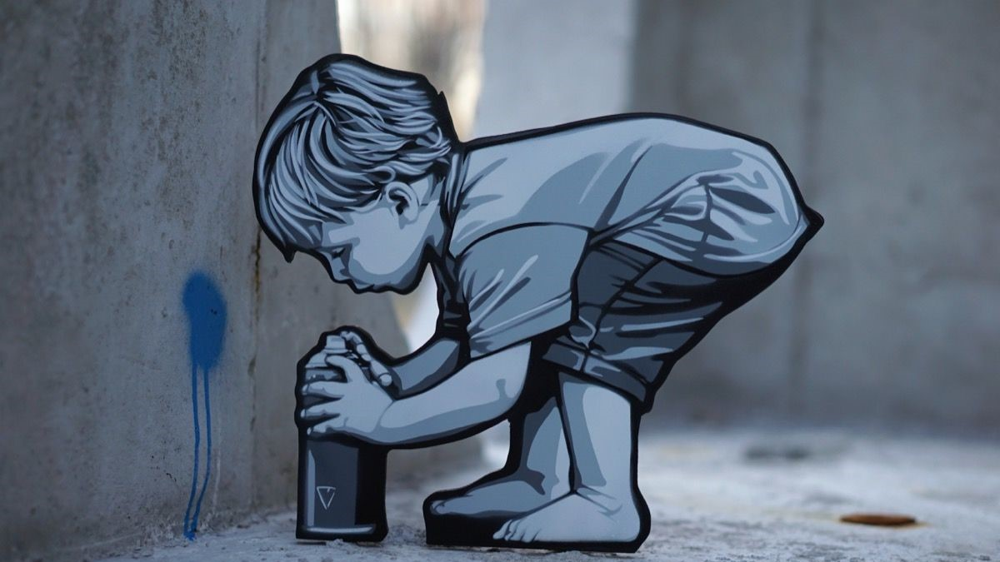
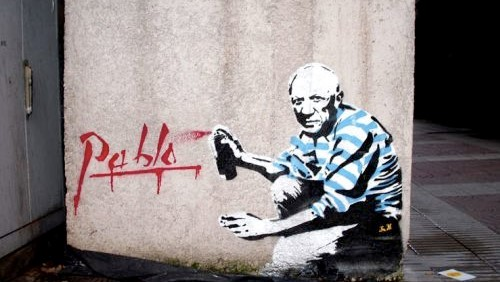
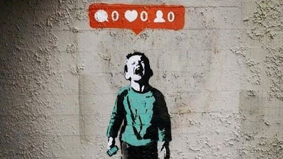
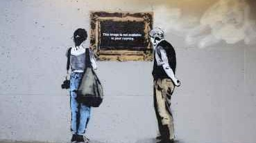

Arte Urbana
Grafite:
- Grafite;
- Convencionalmente feitos por tintas em spray e marcadores;
- este tipo de arte pode ser apenas para uma exibição que contenha uma mensagem social grave;
- A maioria dos artistas trabalham anonimamente e deixam suas iniciais juntamente com o seu trabalho;
- Estes podem ser escritos ou caligrafados. ;
- O Grafite é conhecido desde o antigo Egito, Grécia Antiga e no Império Romano entre outros lugares ao redor do mundo.



.jpeg)
Tipos de Arte Urbana
Tipos:
- Stencil
- Graffite
- Esculturas
- Instalações
- Projecções
- Cartazes
Stencil
Uma técnica usada para aplicar um desenho ou ilustração que pode representar um número, letra, símbolo tipográfico ou qualquer outra forma ou imagem figurativa ou abstrata.



Exemplo
Caracteristicas
Destalhes sobre as latas.
| Latas Montana 94 | ||
|---|---|---|
| Cor | Pressão | Tipo |
| Rv 189 Cor Matte | Baixa | Secagem Ultra-Rápida |
| Rv 188 Cor Matte | Baixa | Secagem Ultra-Rápida |
| Rv 187 Cor Matte | Baixa | Secagem Ultra-Rápida |
| Rv 186 Cor Matte | Baixa | Secagem Ultra-Rápida |
| Rv 185 Cor Matte | Baixa | Secagem Ultra-Rápida |
| Rv 184 Cor Matte | Baixa | Secagem Ultra-Rápida |